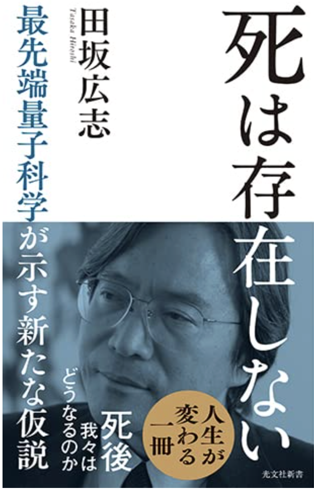

「Webook of the Day」は、松山真之助が26年間続けてきた書評メルマガ。悩みや疲れに効く一冊を、症状にあわせて毎回お届けします。

最先端量子科学の仮説から、生きる意味を静かに問い直す一冊。
「時間」ではなく「価値」で稼ぐという発想の転換を処方します。
効能の元になる、本の核心を診断します。
星の数で、効き目の強さをお伝えします。
どんな症状の方に合うか、用法を添えます。
調剤（購入）先へのリンクをご用意。
1997年から26年、千葉を拠点に本の処方を続けています。熊本・人吉との縁も深く、一冊の本が誰かの元気を取り戻すことを願いながら、日々調剤室（書斎）で本と向き合っています。